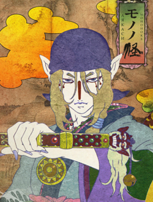

Mononoke is a Japanese anime television series produced by Toei Animation. A spin-off of 2006's horror anthology series Ayakashi: Samurai Horror Tales, Mononoke follows the character of the medicine seller as he continues to face a myriad of supernatural perils. The series is made up of individual chapters in which the medicine seller encounters, combats, and subsequently destroys mononoke. Mononoke are a type of ayakashi, unnatural spirits that linger in the human world by binding themselves to negative human emotions. Using his knowledge of the supernatural to fend off the mononoke until he can learn the spirit's shape (Katachi), truth (Makoto), and reasoning (Kotowari). Only then can he unsheathe his sword and exorcise the spirit.
